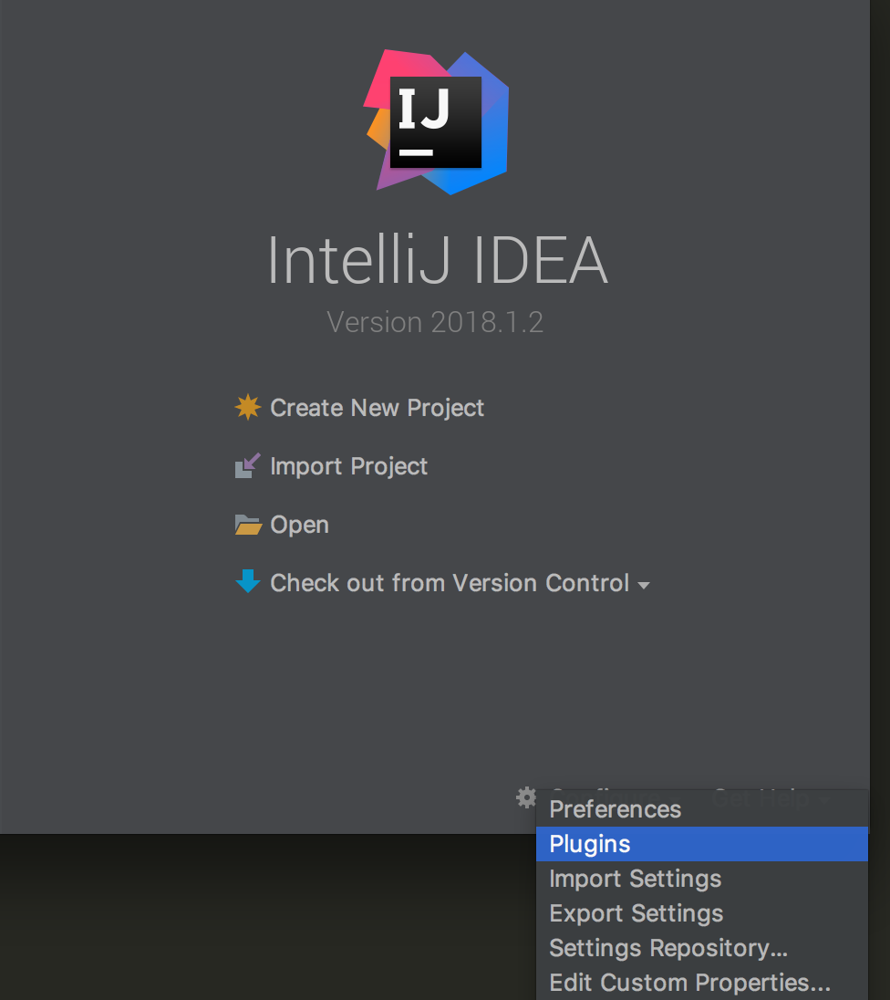
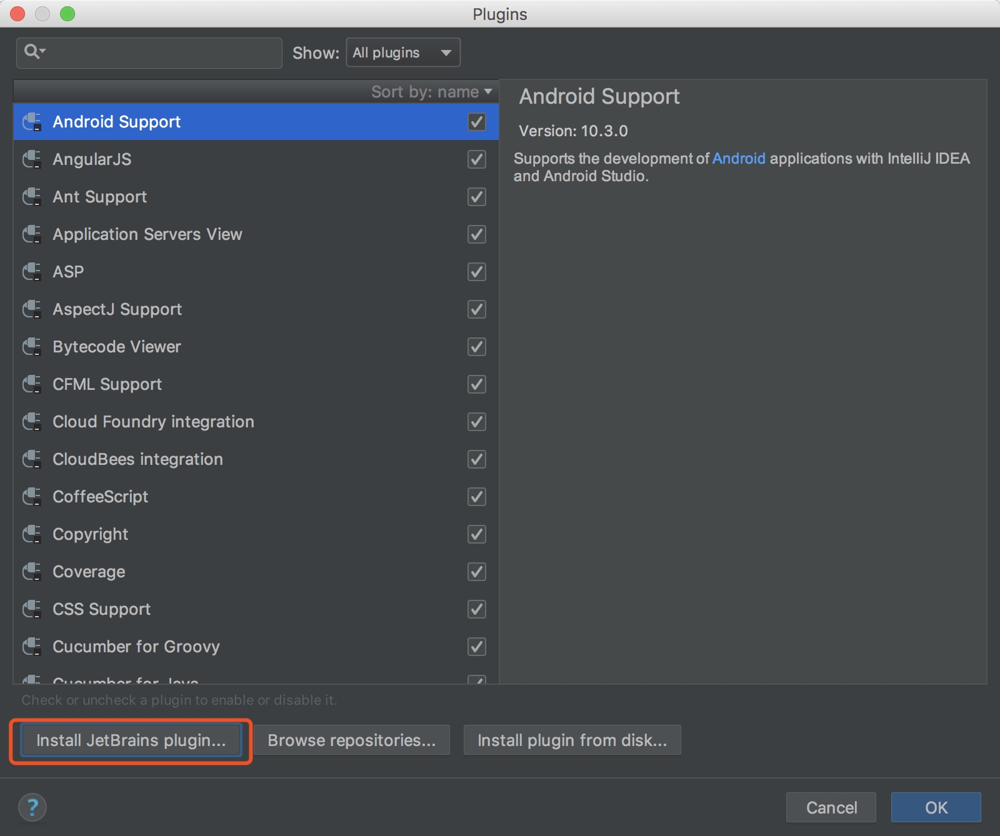
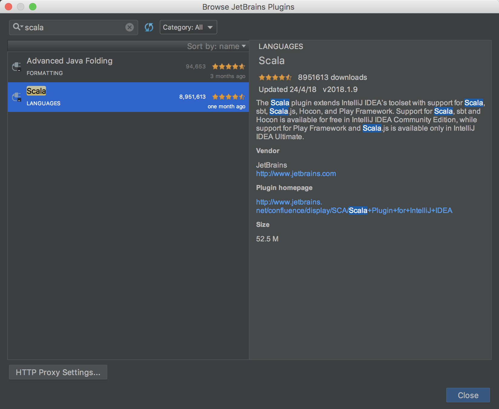
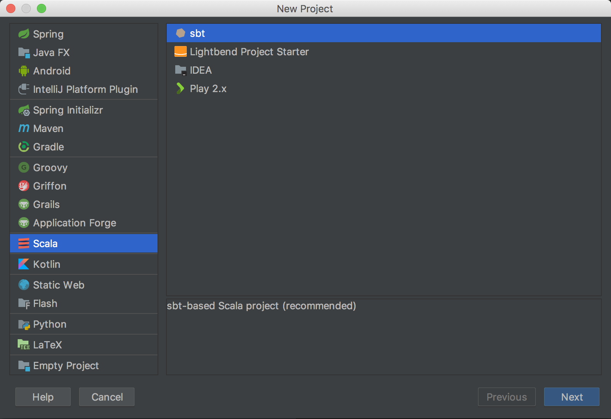
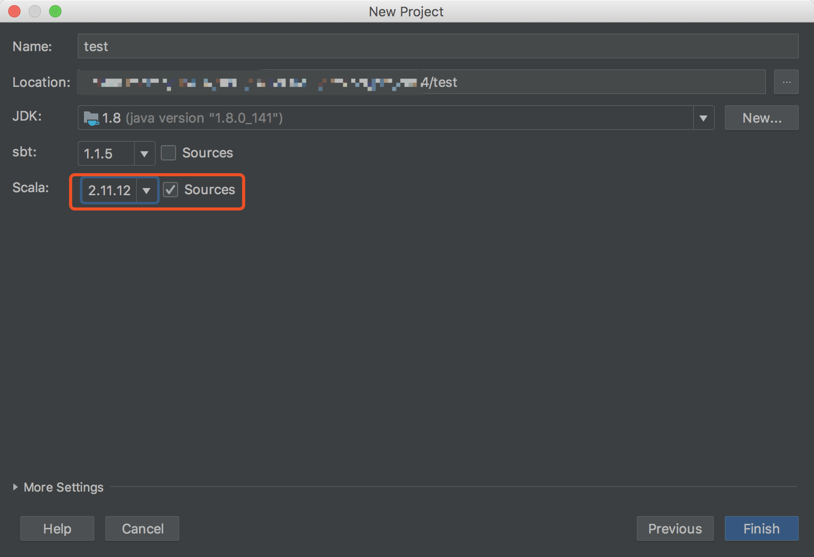
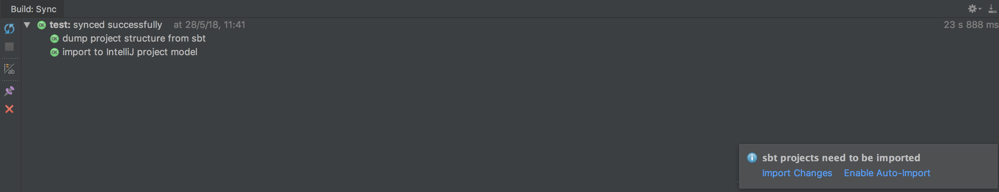
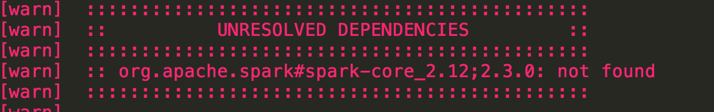
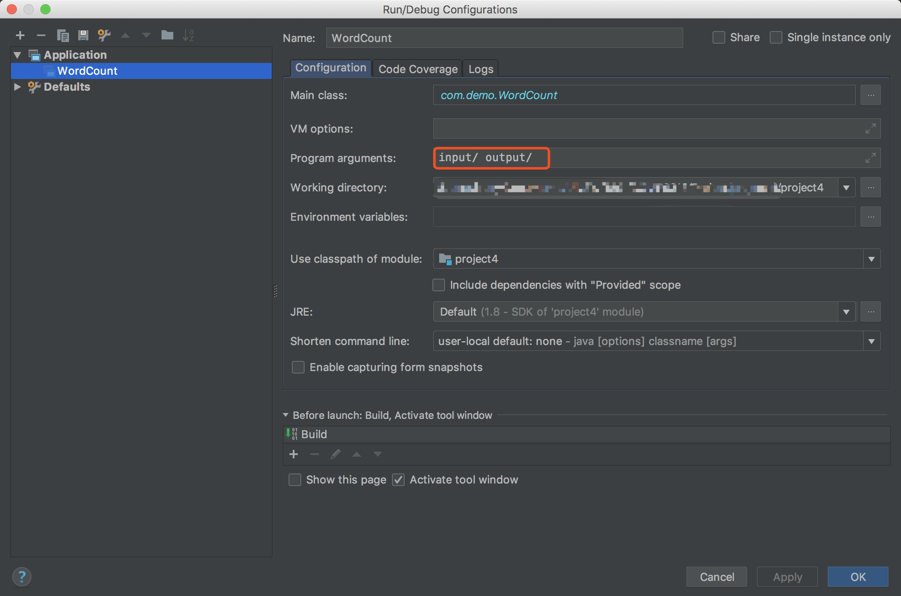
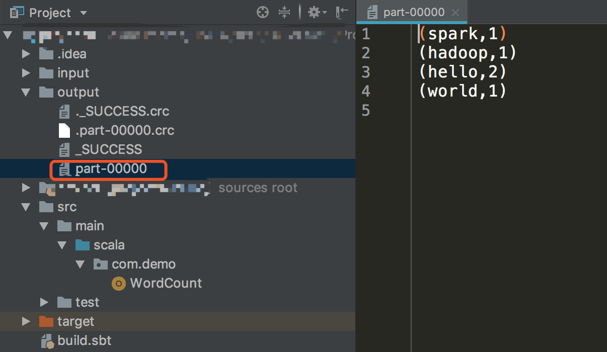

本文操作环境：
- MacOS
- JDK 1.8
- IntelliJ IDEA(Version:2018.1.2)
安装Scala插件
安装Scala插件,该Scala插件自带SBT工具。如果已经安装Scala插件，即可跳过此步骤



install scala
基于SBT构建Scala项目
新建项目
点击create new project，选择scala


添加依赖
编辑build.sbt，加依赖
1
2
3
4
5
6
7
| name := "project4"
version := "0.1"
scalaVersion := "2.11.12"
libraryDependencies += "org.apache.spark" %% "spark-core" % "2.3.0"
|
如果加多个：
1
2
3
| libraryDependencies ++= Seq(
"org.apache.spark" %% "spark-core" % "2.3.0",
"org.apache.spark" %% "spark-graphx" % "2.3.0")
|
添加后，右下角选择import changes 或者 auto import 都可以。

import成功后，设置就全部完成。
之前用Scala version:2.12会报错，改成2.11就好了

创建WordCount实例
- 在scala目录下创建package: com.demo
- 在package下创建scala class: WordCount.scala
1
2
3
4
5
6
7
8
9
10
11
12
13
14
15
16
| import org.apache.spark.SparkContext
import org.apache.spark.SparkConf
object WordCount {
def main(args: Array[String]) {
val inputFile = args(0)
val outputFolder = args(1)
val conf = new SparkConf().setAppName("WordCount").setMaster("local")
val sc = new SparkContext(conf)
val input = sc.textFile(inputFile)
val words = input.flatMap(line => line.split(" "))
val counts = words.map(word => (word, 1)).reduceByKey(_+_)
counts.saveAsTextFile(outputFolder)
}
}
|
1
2
| mkdir input
echo "hadoop hello spark hello world" >> input/word.txt
|
- Edit configuration

- Run WordCount
